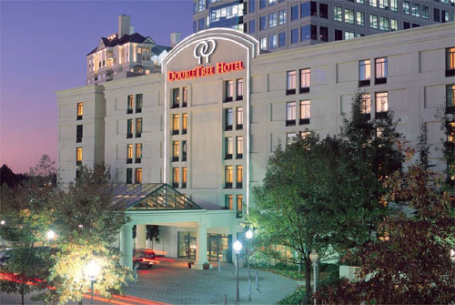

|
ACM CIKM 2001 |

The CIKM 2001 will be held at:
DoubleTree Hotel Atlanta - Buckhead
3342 Peachtree Road
Atlanta, GA 30326 USA
Tel: (404) 231-1234 or 1-800-222-8733
Fax: (404)231-3112
For reservations, please call (404) 231-1234 or 1-800-222-8733, and mention that your are attending "ACM CIKM
2001" to receive conference room rates. For general attendees, the special conference rate is $129 Single
or Double per night. We have also reserved a limited number of rooms for government rate at $93 Single or Double
per night. The room rates do not include the 14% tax. A valid government ID must be presented at check-in for the
government rate.
The conference special rate is guaranteed until October 21, 2001. Room reservation made after October 21 may subject
to rate changes. Individuals are on their own for payment of room, tax and any incidental charges.
All reservations must be guaranteed with a deposit of first nights room and tax, or with a valid credit card..
Check-in time is 3:00PM and check out time is 12 noon. Individual reservations canceled less then 24 hours prior
to arrival and no shows will be billed to individual's credit card.
Parking is not handled by the hotel. Parking fees are $12 per day for self parking, $16 for valet, and $8 for daytime parking.
Directions from the Atlanta Hartfield Airport to the DoubleTree Hotel Atlanta - Buckhead:
Using Public Transportation: There are many shuttle buses from the Atlanta Hartfield Airport. Just go to the shuttle bus area and tell the operators that you want to go to the Doubletree Hotel in the Atlanta/Buckhead area, and they will provide you with the transportation at a lower cost than taxi. Another option is to use the MARTA train that leaves from the Hartfield Airport near the baggage claim area. Take the North Line and stop at the Buckhead station (N7). You can walk to Doubletree Hotel from the station. You need to check the MARTA train schedule for time, etc. Their URL is: http://www.itsmarta.com/riding/railmap.htm .
Driving: Take I-85 North to Exit 87 (GA. 400), follow to Exit 2, turn right onto Lenox Road, at second light turn right onto Peachtree Road, at third light take right into Tower Place cmplex. Hotel is located within complex. (In evening, complex is identifiable by large building with green neon dominating skyline)
|
|
This page is maintained by the conference webmasters, Henrique Paques and David Buttler. |